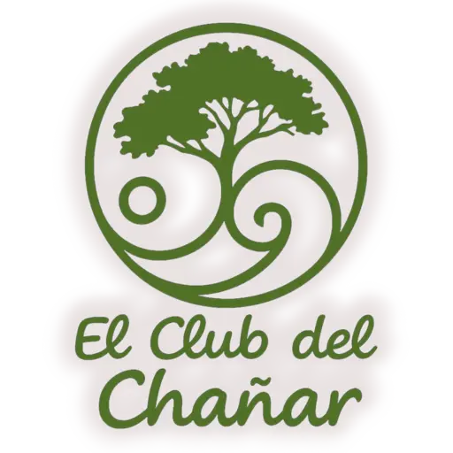
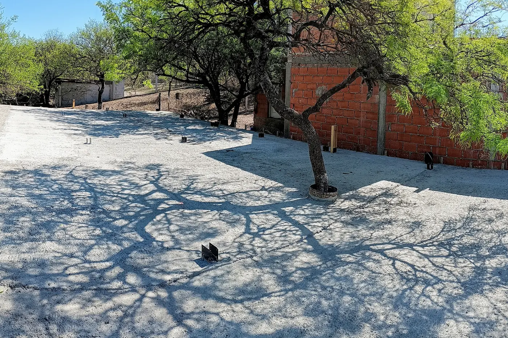
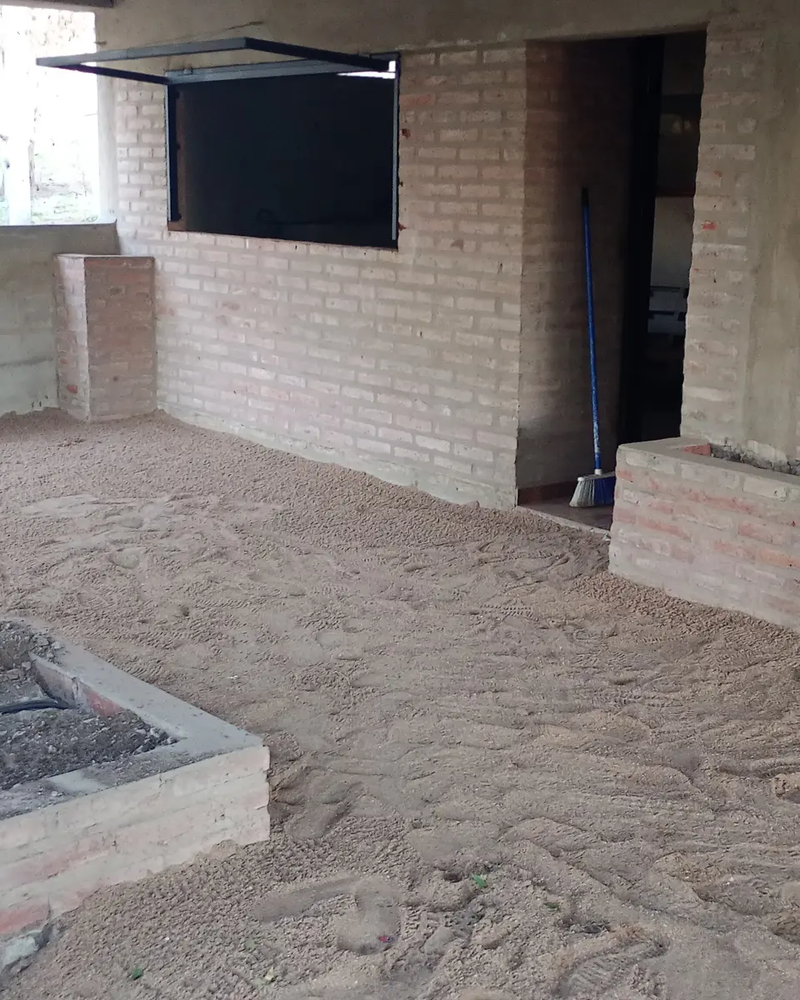
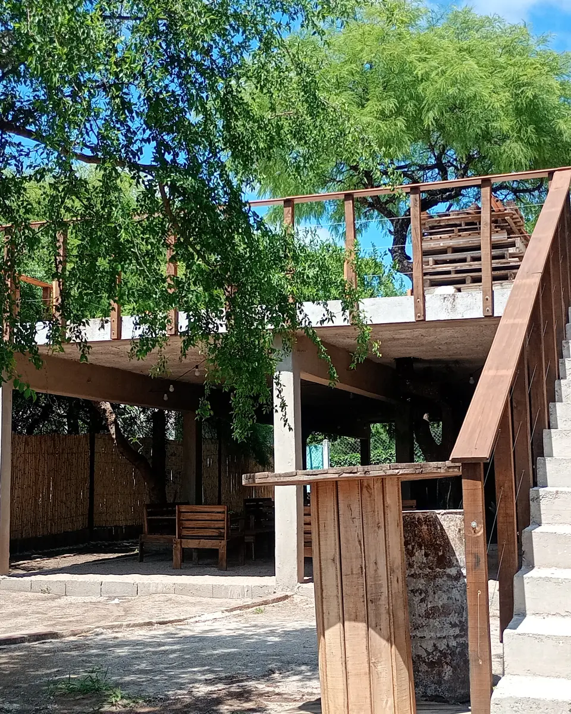

Off-sites
Para equipos que necesitan pensar juntos, ordenar prioridades o celebrar un logro con más aire.

El Club
Lomas del Chañar · Río Ceballos
A 35 minutos de Córdoba, un espacio boutique de uso exclusivo para tu equipo, tu taller o tu celebración íntima. Conectividad satelital Starlink, asador criollo y el silencio del monte.
00 / La idea
El Club del Chañar es una casa serrana para grupos que quieren hacer lugar a lo importante. Un entorno cuidado, sin ruido de fondo, donde una jornada de trabajo puede terminar en una mesa larga y una celebración puede sentirse cercana.
 01 · Jardín
01 · Jardín
01 / Jardín
Entre árboles, sombra y silencio, las ideas encuentran otro tempo. El jardín acompaña una pausa, una conversación o una actividad al aire libre sin tener que salir del encuentro.
Seguir hacia la galería02 / Galería
120 m² cubiertos para una reunión con foco, una mesa compartida o un taller que necesita espacio para respirar. Mobiliario rústico, vajilla y una presencia discreta para que el contenido sea protagonista.

03 / Fuego
El asador criollo y la mesa larga son parte de la identidad del lugar. No hace falta producir una escena: alcanza con que el encuentro tenga tiempo, algo rico cerca y la montaña alrededor.

Materia · luz · encuentro
04 / Terraza
Una extensión para despejarse, hacer yoga o funcional, mirar cómo cae la tarde y volver a la mesa con otra energía. La terraza no compite con la galería: la completa.
Ver cómo se vive05 / Experiencias
Diseñamos cada propuesta alrededor de lo que necesitan hacer y de cómo quieren sentirse al terminar.
Para equipos que necesitan pensar juntos, ordenar prioridades o celebrar un logro con más aire.
Cumpleaños, aniversarios y encuentros íntimos con una atmósfera cuidada, sin formato de salón.
Un marco sereno para facilitar, aprender, crear y compartir una experiencia que deje algo.
06 / Reserva
Completá estos datos y armamos una primera orientación. La solicitud no bloquea la fecha: confirmamos disponibilidad y propuesta a medida por WhatsApp.
Trabajamos con un grupo por turno y recibimos solicitudes con un mínimo de 15 días de anticipación. Capacidad máxima: 45 personas para celebraciones sociales y 25 para corporativo y talleres.
07 / Contacto